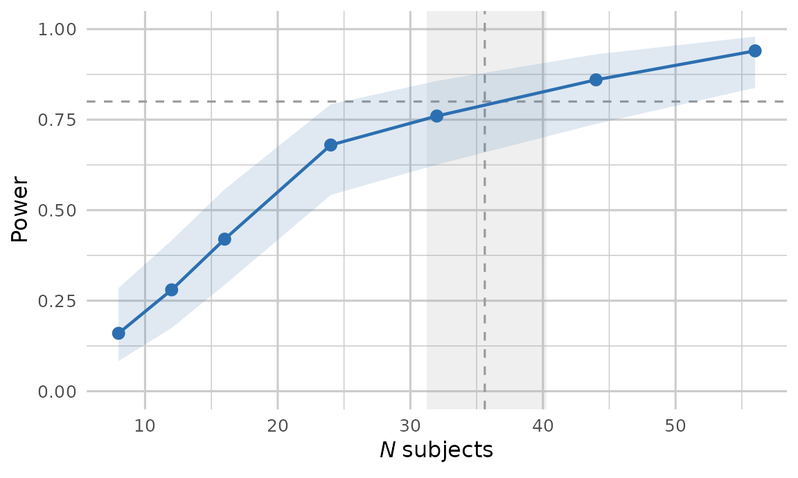

Simulation-based power addresses how often an analysis would detect an effect if the world matched the specification exactly. pilotr estimates this by repeatedly simulating from the ground-truth specification, fitting the analysis model and recording the proportion of significant results. Beyond power, it reports the design-analysis quantities of Gelman and Carlin (2014), namely the Type S (sign) error and the Type M (magnitude, or exaggeration) ratio.
The mixed-effects examples below use small
n_sims, and their results were precomputed with exactly the code shown and shipped with the package, so that the vignette builds quickly.tools/vignette-caches.Rin the source repository regenerates them, and a test there fails if the seeds, the simulated data or the code shown change and the results are not regenerated. For real planning, we recommendn_sims >= 200, with more replicates for stable Type S and Type M estimates.
Two-group Gaussian
The classic case has a closed-form analytic power, which the simulation matches.
spec <- build_spec(list(
name = "two_group", seed = 1, design_kind = "between", n_subject = 64,
factor_name = "group", lev1 = "control", lev2 = "treatment",
intercept = 100, effect = 5, family = "gaussian",
resp_name = "score", sigma = 10))
pw <- power_design(spec, n_sims = 500)
unlist(pw[c("power", "type_s", "type_m", "true_effect", "mean_estimate")]) power type_s type_m true_effect mean_estimate
0.504000 0.000000 1.402398 5.000000 4.987050 At roughly 50% power, the Type M ratio is well above 1. Conditional on significance, the estimated effect is exaggerated, even though the average estimate over all replicates is unbiased. This reflects the statistical-significance filter, which is precisely what design analysis is meant to expose.
Directional predictions
A preregistration that predicts the direction of an effect can test
it one-sided. In power_design(), power_mixed()
and power_curve_mixed(),
alternative = "greater" tests whether the effect is
positive and alternative = "less" whether it is negative.
Here the treatment group is predicted to score higher than the control
group.
pw_greater <- power_design(spec, n_sims = 500, alternative = "greater")
unlist(pw_greater[c("power", "type_s", "type_m")]) power type_s type_m
0.616000 0.000000 1.315194 The one-sided p-value comes from the same t as the two-sided one, and it is half the two-sided p-value when the estimate lies in the predicted direction. A one-sided test at α = 0.05 therefore rejects in exactly the replicates in which the two-sided test at 0.10 rejects with the estimate in that direction. Its power of 0.616 exceeds the two-sided 0.504 above. Type S and Type M are taken over the replicates significant in the predicted direction. Type S is therefore 0 by construction, and Type M, 1.32, is the exaggeration among the replicates that would support the prediction. Results from earlier versions of pilotr were two-sided. In the direction of the true effect, a one-sided power at α is the two-sided power at 2α times one minus the Type S at 2α.
Crossed mixed-effects designs
A feature that distinguishes pilotr from a marginal simulator is
power estimation for crossed by-subject and by-item designs. The R
interface derives the analysis model from the specification, fits it
with lme4/lmerTest and tests each fixed effect
with Satterthwaite degrees of freedom.
spec_c <- build_spec(list(
name = "priming", seed = 1, design_kind = "within", include_items = TRUE,
n_subject = 24, n_item = 18,
factor_name = "condition", lev1 = "related", lev2 = "unrelated",
intercept = 6, effect = 0.06,
subj_int_sd = 0.12, subj_slope_sd = 0.04, subj_corr = 0.2,
item_int_sd = 0.08, item_slope_sd = 0.02, item_corr = -0.1,
family = "shifted_lognormal", resp_name = "RT", sigma = 0.3, shift = 200))The priming design above is fully crossed, so each of the 24
participants sees all 18 items in both conditions, 864 trials in all. A
counterbalanced study, in which each participant sees each item in one
condition only, has half the observations and lower power. Plan such a
study by adding counterbalance = TRUE to the
build_spec() call above. The factor condition
then sets counterbalance, a field of specification version
0.4 that rotates the conditions over participants and items as a Latin
square does (see counterbalanced
lists). The two-list encoding among the worked
encodings of the specification writes the same design for releases
that read no version above 0.3.
The model fitted to each replicate is the one the specification implies, here the maximal model for the design, with by-subject and by-item intercepts and slopes for the condition.
model_formula(spec_c).y ~ effect + (1 + effect | subject) + (1 + effect | item)effect is the contrast column that
model_data() adds for the condition, coded −0.5 for related
and 0.5 for unrelated, so its coefficient is the unrelated condition
minus the related one. .y is the response on the scale of
the specification’s coefficients, which for this shifted lognormal
response is log(RT − 200), the logarithm of the reaction time less its
shift.
# A tiny replicate count keeps the vignette fast. Use 200 or more for real planning.
pm <- power_mixed(spec_c, n_sims = 20)
pmSimulation-based power over 20 replicates (alpha = 0.05)
fitter: lmerTest::lmer, Satterthwaite t
fits: 20 attempted, 20 returned, 8 converged cleanly, 12 singular, 0 with warnings
note: many fits were boundary-singular, so this model is richer than the design supports
effect true power mcse ci95 n_sig
effect 0.06 0.8 0.089 [0.584, 0.919] 16
Type S and Type M, over the significant replicates:
effect type_s type_s_ci95 type_m type_m_mcse
effect 0 [0.000, 0.194] 1.202 0.068power is the proportion of significant results among the
replicates that returned an estimate, which the result counts as
n_returned, here 20 of 20. The remaining counts describe
the fits without entering power. n_converged
counts the fits that returned an estimate with neither a warning nor a
singular fit, 8 here, and n_singular those whose variance
estimates sat on a boundary, 12 here. Singular and warning fits are kept
in power, since their fixed-effect estimates remain
interpretable and discarding them would bias the result. A large
n_singular says that the model is richer than the design
can support at this sample size, which is common in small crossed
designs and worth reporting beside the power.
power_mixed() carries its own simulation loop over the
portable specification, with no other power package underneath it. It
covers territory pioneered by simr (Green and
MacLeod, 2016) and mixedpower (Kumle,
Vo and Draschkow, 2021). pilotr differs in being driven by the
cross-language specification, in reporting Type S and Type M errors
alongside power and in built-in parallelisation.
A preregistered simplification rule
The power above is that of an analysis that reports the maximal model
whatever its fit. Many analysis plans preregister a rule instead: fit
the maximal model, and when the fit is singular, drop the correlations
between the random effects, then the slopes (Barr et al., 2013;
Matuschek et al.,
2017). Each replicate is then analysed with a model that depends on
its data, so the rule has a power and a Type I error rate of its own.
model_formula() builds the two simpler models,
"zcp", the zero-correlation model, and
"intercepts", with random intercepts alone.
model_formula(spec_c, "zcp").y ~ effect + (1 + effect || subject) + (1 + effect || item)
model_formula(spec_c, "intercepts").y ~ effect + (1 | subject) + (1 | item)Given the names of the three models as formula,
power_mixed() and precision_design() fit them
to each replicate in turn, as the rungs of a ladder. Each replicate
keeps the first fit that is not singular, or the intercepts-only fit
when every rung is singular, and fallback = "warning" also
moves on from a fit with a convergence warning. The result gives the
share of the replicates analysed at each rung, and its fit counts
describe the fits that were kept.
pm_rule <- power_mixed(spec_c, formula = c("maximal", "zcp", "intercepts"),
fallback = "singular", n_sims = 200)
pm_rule$rung_sharesA rule that can end on random intercepts alone ignores, whenever it
gets there, how much the effect varies over subjects and items, and a
test that ignores that variation rejects a true null hypothesis too
often (Barr et al., 2013). Run the null condition through the same
ladder to see how often. design_conditions() puts it
first.
sweep_spec(spec_c, "fixed$coefficients", design_conditions(effect = 0.06),
power_mixed, formula = c("maximal", "zcp", "intercepts"), n_sims = 200)tools/calibration/simplification_rule.R in the source
repository runs these replicates, 200 in each condition, and analyses
each of them with the maximal model, with the rule and with random
intercepts alone. With the effect, the maximal model was singular in 152
of the 200 replicates. The rule kept the maximal fit in the other 48,
and of the 152 it kept the zero-correlation fit in 23 and the
intercepts-only fit in 129. It raised power from 0.69 to 0.735, each
with a Monte Carlo standard error of about 0.03. Random intercepts alone
gave 0.835, but not all of that gain is real. Relative to the spread of
its estimates, the intercepts-only model reported standard errors about
15% smaller than the maximal model did, in both conditions. In the null
condition, the three analyses rejected in 2, 3 and 6 of the 200
replicates, where a test at its nominal level would reject in 10. The
slopes of this design are small beside its residual variation, which
leaves the intercepts-only model little to ignore. Where the effect
varies more over subjects or items, it ignores more, and the null
condition shows what that costs.
Which model each family gets
power_mixed() and precision_design() choose
the fitter by the response family, so that the estimates are on the
scale the specification’s coefficients are written on. The mean
estimate, Type M and the region of practical equivalence then compare
like with like. A model without random effects, such as that of a
between-subjects design with one row per subject, is fitted by
lm() or glm(). Each result names its fitter
and test in fitter.
| Family | R power_mixed()
|
R precision_design()
|
Python power_mixed
|
|---|---|---|---|
gaussian, exgaussian
|
lmerTest::lmer(), Satterthwaite t
|
lme4::lmer(), Wald interval |
MixedLM, Wald z |
lognormal, shifted_lognormal
|
as above, on the log scale | as above, on the log scale | MixedLM on the log scale, Wald z |
bernoulli |
lme4::glmer(), binomial, Wald z
|
lme4::glmer(), Wald interval on the logit scale |
linear model on the response scale, a warning, no mean estimate or Type M, and no Type S for an interaction |
poisson |
lme4::glmer(), Poisson, Wald z
|
lme4::glmer(), Wald interval on the log scale |
as for bernoulli
|
ordinal, beta
|
linear model on the response scale, a warning, no mean estimate or Type M, and no Type S for an interaction | linear model on the response scale, a warning, no ROPE decisions (the interval width stays) | as for bernoulli
|
A Wald z treats the variance components as known. It is the test Bolker et al. (2009) recommend for the fixed effects of a GLMM without overdispersion. With few subjects or items, however, it rejects more often than its nominal level (Li and Redden, 2015), so the power of a small accuracy or count design is somewhat overstated.
Ordinal and Beta outcomes have no frequentist model here yet, so
their power is that of the linear model’s test and their Type S compares
signs alone. A bounded response compresses differences near the ends of
its range, so an interaction can change sign between the two scales, and
its Type S is withheld. generate_design_analysis() writes a
Bayesian design analysis for them, on the logit scale of their
coefficients. Python’s power_mixed fits the model the
specification implies, from ports of model_formula() and
model_data(), with every random effect as an independent
variance component, so it leaves out the correlations that
lme4 estimates here. It refuses a design without random
effects, as its own guide describes.
A power curve
The following sweep over the number of subjects reports power at each size.
curve <- power_curve_mixed(
spec_c,
subject_ns = c(8, 12, 16, 24, 32, 44, 56),
n_sims = 50)
print(curve[, c("n_subject", "power", "power_lo", "power_hi", "type_m",
"n_returned", "n_converged", "n_singular")], digits = 3) n_subject power power_lo power_hi type_m n_returned n_converged n_singular
1 8 0.16 0.0834 0.285 1.80 50 7 42
2 12 0.28 0.1747 0.417 1.57 50 6 44
3 16 0.42 0.2938 0.558 1.36 50 14 34
4 24 0.68 0.5419 0.792 1.17 50 10 40
5 32 0.76 0.6259 0.857 1.19 50 13 37
6 44 0.86 0.7381 0.930 1.06 50 15 35
7 56 0.94 0.8378 0.979 1.04 50 25 25The curve has a row for each sample size, with the power, Type S,
Type M and fit counts that power_mixed() reports, and the
table shows some of its columns. power_lo and
power_hi bound the 95% Wilson interval of each power
estimate, and the fit counts read as they do above, with
n_returned the denominator of power.
Each sample size draws its own replicates. Point j of a
sweep over J sizes takes
replicate_seeds(seed, J)[j] as its seed, so no two points
share their random numbers, as target_n() assumes below
when it fits them. Up to pilotr 0.3.1 every point took the
specification’s own seed, which seeds = "shared" still
does.
The sample size the curve implies
The curve is a means to an end. What the analysis is run for is the
sample size at which power reaches the target, and that is the number a
preregistration quotes. Reading it off the table or the plot judges
points whose Monte Carlo intervals overlap, and yields a bare figure
with no interval attached to it. target_n() fits the curve
and inverts the fit, so the crossing is estimated, and arrives with the
uncertainty a simulated curve carries.
n n_lo n_hi
36 32 41 Fifty replicates per point is few, and the interval says so. The fit
is a binomial regression of power on the square root of the sample size,
weighted by the replicates behind each point, and the interval is the
delta-method interval that MASS::dose.p() computes for a
fitted glm. Nothing is extrapolated: a curve that never
reaches the target within the sizes swept is refused, and the refusal
reports the range the sweep did cover.
For a curve swept over something other than sample size,
solve_curve() is the general form, with
transform = "identity" where the axis is an effect
size.
Plotting the curve and the solved size together shows what the solve has done.
# The transparent device canvas is what lets the page colour through. A ggplot
# theme alone cannot do it, since the device paints white underneath. The
# website's dark mode then inverts the figure's ink, so the axes and labels
# follow the theme and the figure carries no opaque matte.
library(ggplot2)
# Each power estimate is a proportion over the replicates that returned an
# estimate, and the curve carries its 95% Wilson interval, which the shaded
# band draws.
ggplot(curve, aes(n_subject, power)) +
geom_hline(yintercept = 0.8, linetype = 2, colour = "grey60") +
# The solved sample size and its interval. The dashed horizontal line marks
# the target and the band marks where the curve reaches it.
annotate("rect", xmin = solved$lo, xmax = solved$hi, ymin = -Inf, ymax = Inf,
fill = "grey60", alpha = .15) +
geom_vline(xintercept = solved$value, linetype = 2, colour = "grey60") +
geom_ribbon(aes(ymin = power_lo, ymax = power_hi),
alpha = .15, fill = "#2C6FB0") +
geom_line(colour = "#2C6FB0", linewidth = 0.8) +
geom_point(colour = "#2C6FB0", size = 2.6) +
scale_y_continuous(limits = c(0, 1)) +
labs(x = expression(italic(N) ~ "subjects"), y = "Power") +
theme_minimal(base_size = 12) +
# theme_minimal still paints a white plot.background over the transparent
# canvas, so both surfaces have to be cleared for the page colour to reach the
# figure. The ink is left at its default, because the website inverts the
# figure in dark mode, which turns the dark axis text light, whereas a fixed
# mid-grey would be inverted into a muddy tan.
theme(plot.background = element_rect(fill = NA, colour = NA),
panel.background = element_rect(fill = NA, colour = NA),
panel.grid = element_line(colour = "grey80"))
The shaded horizontal band along the curve is the Monte Carlo
interval, the 95% Wilson interval of each power estimate over its
n_returned replicates. Unlike a band of 1.96 standard
errors either side, it stays between 0 and 1 and keeps a width where
power reaches either. The vertical band is the solved sample size and
its own interval, which is what the dashed target line invites the
reader to guess at.
The solved size counts the participants whose data are analysed. Simulated data are complete, with no attrition or exclusions. A study that expects to lose a proportion p of its participants therefore recruits N / (1 − p), which is 67 for 60 analysed at 10% attrition. Losses unrelated to the outcome cost power without biasing the estimates, and recruiting the extra participants largely restores that power. Missingness that depends on the outcomes that would have been observed, which pilotr does not simulate, can bias the estimates as well (Rubin, 1976).
A sample-size justification
A preregistration, a registered report or a grant application has to
justify the sample size it asks for, and the solved size is only part of
that justification. Lakens (2022, Table 4)
also asks for the primary analysis with its alpha and sidedness, the
desired power, each effect size with the reason it was chosen, and the
power when the null hypothesis is true. A simulation adds items of its
own: the number of replicates, the fits that were singular or carried a
warning and the Monte Carlo error of every rate (Morris, White and Crowther,
2019). power_report() writes all of them in Markdown
from a power result, the target_n() result and the
specification file, whose seed and checksum it records. The
justification below is illustrative.
spec_file <- file.path(tempdir(), "priming.json")
writeLines(spec_json(spec_c), spec_file)
power_report(pm, solved = solved, spec_file = spec_file,
justification = c(effect = paste(
"A difference of 0.06 on the log scale, about 6% of the reaction time less",
"its shift, the smallest effect of theoretical interest.")))# Sample-size justification
## Primary analysis
- Model and test: lmerTest::lmer, Satterthwaite t
- Significance level: alpha = 0.05, two-sided
- Simulated units: subject 24, item 18
## Desired power and sample size
- Desired power: 0.8
- Sample size: 36 (95% confidence interval 32 to 41), the exact solution 35.61 rounded up
- Fit: a probit regression of `power` on the square root of `n_subject`, over 7 points from 8 to 56
- Heterogeneity factor: 1.00, the dispersion that scales the variance behind the interval, which is 1 where the curve fits the probit model
## Focal effects
The rates below are those of the simulated design, each over the replicates that returned an estimate for the effect.
### `effect`
- True value: 0.06
- Justification: A difference of 0.06 on the log scale, about 6% of the reaction time less its shift, the smallest effect of theoretical interest.
- Power: 0.800 (Monte Carlo standard error 0.089; 95% Wilson interval 0.584 to 0.919), from 16 of 20 replicates
- Type S: 0.000 (95% Wilson interval 0.000 to 0.194)
- Type M: 1.202 (Monte Carlo standard error 0.068)
## Monte Carlo accounting
- Replicates: 20 simulated, 20 returned an estimate
- Fits: 8 converged cleanly, 12 singular, 0 with a warning
Each rate's Monte Carlo standard error is sqrt(p(1 - p) / n), over the n replicates that returned an estimate, and its interval is the 95% Wilson score interval. The standard error of Type M is the standard deviation of the exaggeration ratios over the square root of their number.
## Reproducibility
- Software: pilotr 0.3.1, R 4.6.1, lme4 2.0.6, lmerTest 3.2.1
- Specification: priming.json, MD5 checksum 7cc70e3fb12f0236d8ec807b28c6c313
- Seed: 1The rates in the report are those of pm, the 20
replicates at 24 subjects above, which keep the vignette quick. A
justification to submit pairs the solved size with a run at that size
and with enough replicates for planning. It adds the same analysis with
the effect set to zero as null_result, whose rejection rate
shows whether the test holds its level in this design.
at_n <- spec_c
at_n$units$subject$n <- solved$n
writeLines(spec_json(at_n), "priming.json")
null_n <- at_n
null_n$fixed$coefficients$effect <- 0
report <- power_report(power_mixed(at_n, n_sims = 500), solved = solved,
spec_file = "priming.json",
justification = c(effect = "Why an effect of this size matters."),
null_result = power_mixed(null_n, n_sims = 500))
cat(report, file = "justification.md")Each rate’s Monte Carlo standard error and Wilson interval are
computed in the report from its counts, and the Python twin’s
power_report() writes the same text from the same
counts.
Subjects and items
The curve above adds subjects and keeps 18 items, and in a crossed design the number of items limits what more subjects can buy. When the effect of the condition varies from item to item, as the by-item slope in the specification says it does, part of the standard error of the effect comes from the items sampled. That part shrinks only as items are added. As subjects are added, the standard error therefore falls towards a floor set by the number of items. Power at a fixed number of items levels off below 1 (Westfall, Kenny and Judd, 2014; Judd, Westfall and Kenny, 2017). In the priming design, the floor is the by-item slope standard deviation over the square root of the number of items, 0.02 / √18 ≈ 0.0047. The effect of 0.06 is some 13 times that, so the ceiling lies far above any target.
Where the ceiling is lower, a curve over subjects flattens towards
it, and the probit curve that target_n() fits rises towards
1 and cannot bend into the plateau. A curve that levels off near the
target can then be solved far from the true crossing. One that levels
off just below the target never crosses it, but Monte Carlo noise can
lift a simulated power over the target, and the curve can then be solved
as though it crossed.
To compare designs that trade subjects for items, sweep the number of items at a few subject counts and solve each of those curves for the number of items. Power over items levels off in the same way. As items are added, the standard error falls towards the by-subject slope standard deviation over the square root of the number of subjects, which at the smallest subject count below is 0.04 / √24 ≈ 0.0082. The effect is some 7 times that, so these curves too can rise well past the target.
# Not run here, since it fits 3,000 models: three subject counts, five item counts and
# 200 replicates at each. Each solve gives the number of items that reaches a power of
# 0.8 with that many subjects.
pairs <- lapply(c(24, 36, 48), function(n_subject) {
spec <- spec_c
spec$units$subject$n <- n_subject
items <- sweep_spec(spec, "units$item$n", c(8, 12, 18, 27, 40), power_mixed,
n_sims = 200, .name = "n_item")
solved <- target_n(items, target = 0.8)
data.frame(n_subject = n_subject, n_item = solved$n,
n_item_lo = solved$n_lo, n_item_hi = solved$n_hi)
})
do.call(rbind, pairs)The pairs trace how many items each number of subjects needs, and the cheapest of them, given what a subject and an item each cost, is the design to plan for.
Parallel execution
Every power and precision analysis in pilotr takes a
workers argument that spreads the Monte Carlo replicates
across local cores. Each replicate takes its own seed from
replicate_seeds(), so the results are identical to a serial
run whatever the worker count, and parallelisation costs nothing in
reproducibility. The mixed-model fits dominate the running time, which
makes the speed-up close to linear in the number of cores. In a sweep
the worker pool is created once and reused across all sample sizes. The
analyses also take a cluster made with
parallel::makeCluster() as cl, which
sweep_spec() passes to every point of an effect-size sweep
in the same way.
power_curve_mixed(
spec_c, subject_ns = seq(20, 60, 10), n_sims = 500, workers = 8)This design answers a serial bottleneck familiar from
simr::powerCurve(), which this package’s maintainer
previously worked around by splitting the sample-size grid across
separate jobs by hand and recombining the results afterwards (Bernabeu,
2021). In pilotr the same gain takes one argument.
A bridge to the Bayesian workflow
For a confirmatory Bayesian fit, brms_bridge() returns a
ready-to-run brms model. It provides the family, the fixed
and random-effects formula, and a weakly-informative prior set, all
derived from the same specification, so that the planning model and the
confirmatory model remain consistent. The formula reads the contrast
columns that model_data() adds, so the model runs on
model_data(spec_c, simulate_design(spec_c)) or on collected
data passed through model_data(). Its priors are scaled to
the response and to each of those columns, here on the log scale on
which the coefficients of a shifted lognormal act. Printing the result
shows the model as code to copy into a script; assigning it instead
gives the same parts as formula, family and
priors, silently, for a caller assembling its own.
brms_bridge(spec_c)library(brms)
fit <- brm(
RT ~ effect + (1 + effect | subject) + (1 + effect | item),
data = your_data, # model_data(spec, simulate_design(spec)) adds the contrast columns
family = shifted_lognormal(),
prior = c(
prior(normal(0, 0.3348), class = "b", coef = "effect"),
prior(normal(0, 0.335), class = "sd"),
prior(lkj(2), class = "cor")
),
chains = 4, iter = 4000, warmup = 2000, cores = 4,
control = list(adapt_delta = 0.95)
) See also
The precision / ROPE vignette covers design analysis against a region of practical equivalence, where the question is whether an effect is large enough to matter.